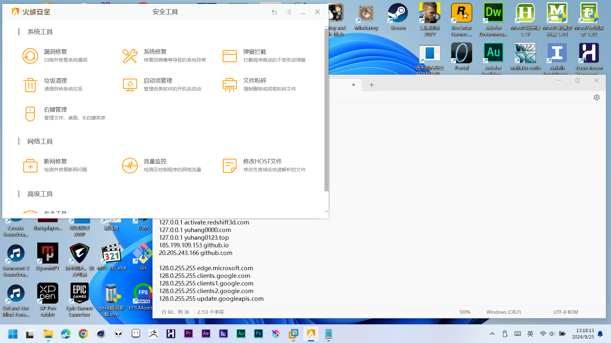
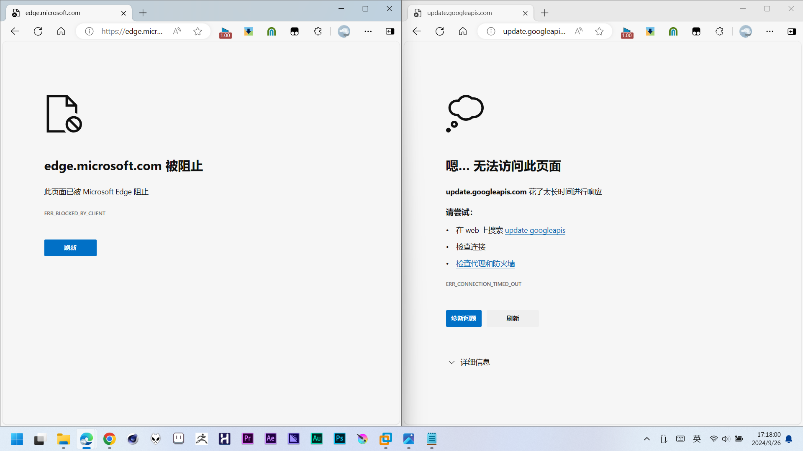

又沉靜了幾天沒寫Blog了。
這幾天寫的油猴腳本，詳細資訊可以去這裡看看:
B站動態導航 (歸檔員自用)
用來遍歷動態的小脚本，原始代码如下:
// ==UserScript==
// @name B站動態導航 (歸檔員自用)
// @namespace http://yuhang0000.github.io/
// @version v1.5_2024-11-22
// @description 能導航到指定日期的動態，僅對 https://space.bilibili.com/<你UID>/dynamic/ 作用，僅歸檔員自用。
// @author 欲行肆灵
// @match https://space.bilibili.com/*
// @grant none
// @license GPLv3
// @icon 
// @downloadURL https://update.greasyfork.org/scripts/517541/B%E7%AB%99%E5%8B%95%E6%85%8B%E5%B0%8E%E8%88%AA%20%28%E6%AD%B8%E6%AA%94%E5%93%A1%E8%87%AA%E7%94%A8%29.user.js
// @updateURL https://update.greasyfork.org/scripts/517541/B%E7%AB%99%E5%8B%95%E6%85%8B%E5%B0%8E%E8%88%AA%20%28%E6%AD%B8%E6%AA%94%E5%93%A1%E8%87%AA%E7%94%A8%29.meta.js
// ==/UserScript==
(function() {
'use strict';
window.areufind = 2333;
window.areuskip = false;
//这是延时
function delay(ms) {
return new Promise(resolve => setTimeout(resolve, ms));
}
//时间戳转换
function timestamp(itemtime,now){
if(itemtime.indexOf("刚刚") != -1){
itemtime = now.valueOf()
}
else if(itemtime.indexOf("秒") != -1){
itemtime = now.valueOf() - (itemtime.substring(0,itemtime.indexOf("秒")) * 1000);
}
else if(itemtime.indexOf("分钟") != -1){
itemtime = now.valueOf() - (itemtime.substring(0,itemtime.indexOf("分钟")) * 60 * 1000);
}
else if(itemtime.indexOf("小时") != -1){
itemtime = now.valueOf() - (itemtime.substring(0,itemtime.indexOf("小时")) * 60 * 60 * 1000);
}
else if(itemtime.indexOf("天") != -1){
if(itemtime.indexOf("昨天") != -1){
itemtime = now.valueOf() - now.getHours() * 60 * 60 * 1000;
}
else if(itemtime.indexOf("前天") != -1){
itemtime = now.valueOf() - (now.getHours() * 60 * 60 * 1000) + 86400000;
}
else{
itemtime = now.valueOf() - (now.getHours() * 60 * 60 * 1000) + itemtime.substring(0,itemtime.indexOf("天")) * 86400000;
}
}
else{
itemtime = itemtime.replace(/\//g, "-");
itemtime = itemtime.replace(/年/g, "-");
itemtime = itemtime.replace(/月/g, "-");
//itemtime = itemtime.replace(/日/g, "");
if(itemtime.indexOf("日") != -1){
itemtime = itemtime.substring(0,itemtime.indexOf("日"))
}
if((itemtime.split("-").length - 1) == 1){
itemtime = now.getFullYear() + "-" +itemtime;
}
let temptime = new Date(itemtime);
itemtime = temptime.valueOf();
}
return itemtime;
}
//找出荧幕目前所在的动态
function finditem(item_num,two,now = null){
try{
let items = document.querySelector('.bili-dyn-list__items');
let item = items.querySelectorAll('.bili-dyn-list__item');
for(let btn of item){
item_num = item_num + 1;
//console.log(item_num + ": " +btn.getBoundingClientRect().top);
if(btn.getBoundingClientRect().top > 0){
if(item_num >= 1){
item_num = item_num - 1;
}
//let itemtime = btn.querySelector('.bili-rich-text__content');
//itemtime = itemtime.innerText;
//console.log("> " + itemtime + " <");
break;
}
}
if(two == 2){
console.log("从 " + (item_num + 1) + " 项开始遍历");
}
else{
console.log("截止到 " + (item_num + 1) + " 项结束");
//转化时间戳
item = items.children[item_num];
//item.scrollIntoView();
//window.scrollTo(0, window.scrollY - 70);
let itemtime = item.querySelector('.bili-dyn-time');
itemtime = itemtime.innerText;
item_num = timestamp(itemtime,now);
}
//window.areufind = true;
return item_num;
}
catch (err){
console.log("###### 先别急, 页面尚未加载完 ######");
//console.log(err);
window.areufind = true;
return null;
}
}
//实际运行的地方
async function run(time,now,two = false,ddd){
let item_num = -1;
let item_number = 0;
//妈的，再嵌套一个函数 - 遍历动态主函数
async function checkitem(item,item_num){
//如果存在
item.scrollIntoView();
window.scrollTo(0, window.scrollY - 70);
item_number = item_number + 1;
//等待图片加载
let itemimg = item.querySelectorAll('picture.b-img__inner');
if(itemimg != undefined){
for(let num of itemimg){
//console.log("1 " + itemimg);
let img1 = num.lastChild;
//console.log("2 " + itemimg);
let areuokimg = -1;
if(img1.src.indexOf("none") != -1){
console.log("# 跳过: " + img1.src);
continue;
}
else{
//img1.onerror = function() { areuokimg = false; };
}
while(img1.naturalWidth === 0 && window.areuskip != true){
//忘记在这里写强制暂停了
if(window.areufind == true){
return;
}
if(img1.complete == true){
console.log("# 图片加载失败: " + img1.src);
//areuokimg = -1;
img1.src = img1.src;
}
else{
console.log("# 等待图片加载: " + img1.src);
}
await delay(1000);
}
if(window.areuskip == true){
window.areuskip = false;
console.log("# 跳过: " + img1.src);
continue;
}
}
}
item_num = item_num + 1;
return item_num;
}
async function checknewitem(two){
//检查是否到达世界的尽头
let no_more = document.querySelector('.bili-dyn-list-no-more');
let itemss = document.querySelector('.bili-dyn-list__items');
//console.log(no_more);
//console.log(itemss.length);
if (no_more != undefined && itemss.length == undefined && two != 2) {
console.log("# 你已经到达世界的尽头 #");
console.log("完成!!!");
window.areufind = true;
}
else if (no_more != undefined && two == 2) {
console.log("# 你已经到达世界的尽头 #");
console.log("完成!!!");
window.areufind = true;
}
else if(window.areufind != true){
//console.log("# 错误: \n" + err);
console.log("# 遇到了一些错误, 尝试重试 #");
await delay(1000);
window.scrollTo(0, 0);
window.scrollTo(0, document.documentElement.scrollHeight);
}
}
//首先判断当前DOM所在位置
if(two == 2){
item_num = finditem(item_num,two);
if(item_num == null){
return;
}
}
//主循环
while(window.areufind != true){
try{
let items = document.querySelector('.bili-dyn-list__items');
let item;
if(two == true){
item = items.firstChild;
}
else if(two == false){
item = items.children[1];
}
//遍历操作在这里
else if(two == 2){
item = items.children[item_num];
//console.log(item);
if(item == undefined && window.areufind != true){
while(item == undefined){
console.log("# 遇到了一些错误, 尝试重试 #");
window.scrollTo(0, 0);
window.scrollTo(0, document.documentElement.scrollHeight);
//window.scrollTo(0, document.documentElement.offsetHeight);
//检查是否到底
let no_more = document.querySelector(".bili-dyn-list-no-more");
if(no_more != undefined) {
window.areufind = true;
break;
}
else{
await delay(1000);
item = items.children[item_num];
//item_num = checkitem(item,item_num);
}
}
if(item != undefined){
item_num = await checkitem(item,item_num);
}
}
else{
item_num = await checkitem(item,item_num);
}
//window.areufind = true;
//return;
}
let itemtime;
let itemtag;
if(item != undefined){
itemtime = item.querySelector('.bili-dyn-time');
itemtime = itemtime.innerText;
itemtag = item.querySelector('.bili-dyn-tag__text');
//itemtag = itemtag.innerText;
console.log("> " + itemtime + " <");
//统统转成时间戳
itemtime = timestamp(itemtime,now);
console.log(itemtime);
}
if(item != undefined){
if(itemtime > time){
if(two != 2){
item.remove();
item_number = item_number + 1;
}
}
else if(itemtag != undefined){
if(two == true){
item.remove();
item_number = item_number + 1;
}
}
else{
item.scrollIntoView();
window.scrollTo(0, window.scrollY - 70);
console.log("完成!!!");
window.areufind = true;
}
}
else{
await checknewitem(two);
}
}
catch (err){
console.log("# 错误: \n" + err.stack);
await checknewitem(two);
}
//areufind = true;
await delay(ddd);
//时间统计
if(window.areufind == true){
let nowtime = new Date();
let spendtime = nowtime.valueOf() - now.valueOf();
let hhh
let mmm
let sss
if(spendtime >= 3600000){
hhh = spendtime / 1000 / 60 / 60;
}
else{
hhh = 0;
}
if(spendtime >= 60000){
mmm = (spendtime - Math.trunc(hhh) * 3600000) / 1000 / 60;
}
else{
mmm = 0;
}
sss = (spendtime - Math.trunc(hhh) * 3600000 - Math.trunc(mmm) * 60000) / 1000;
console.log("###### 总计用时: " + Math.trunc(hhh) + "小时" + Math.trunc(mmm) + "分钟" + Math.trunc(sss) + "秒, 总计 " + item_number + " 项动态 ######");
}
}
};
//接受参数
window.bilidel = function(input,ddd = 1,two = false) {
//console.log(window.areufind);
let returns = "################################";
if(window.areufind == false){
if(input == "stop" || input == "Stop"){
window.areufind = true;
console.log("# 终止任务 #");
}
else if(input == "skip" || input == "Skip"){
window.areuskip = true;
console.log("# 尝试跳过 #");
}
else{
console.log("\(#`O′\) 上一次任务尚未完成欸!!!");
}
return "################################";
}
if(input == "stop" || input == "Stop" || input == "skip" || input == "Skip"){
console.log("\(#`O′\) 参数错误欸。");
}
else{
//console.log(input);
let now = new Date();
let Y;
let M;
let D;
//给了目标日期
if(input == "" || input == undefined || input == null){
if(two == 2){
input = "1970-1-1";
}
}
if(input != "" && input != undefined && input != null){
input = input.replace(/\//g, "-");
input = input.replace(/年/g, "-");
input = input.replace(/月/g, "-");
input = input.replace(/日/g, "");
if((input.split("-").length - 1) == 0){
if(input.length > 2){
input = input + "-1-1";
}
else{
input = now.getFullYear() + "-1-" + input;
}
}
Y = input.substring(0,input.indexOf("-"));
M = input.substring(input.indexOf("-") + 1);
if(M.indexOf("-") != -1){
M = M.substring(0,M.indexOf("-"));
}
if((input.split("-").length - 1) > 1){
D = input.substring((Y + "-" + M + "-").length);
}
else{
D = 1;
}
if((input.split("-").length - 1) > 2){
console.log("\(#`O′\) 你参数写错了欸。");
return "################################";
}
else if((input.split("-").length - 1) == 1){
if(Y.length > 2){
D = 1;
}
else{
D = M;
M = Y;
Y = now.getFullYear();
}
}
}
//没给具体日期
else{
let item_time = finditem(-1,two,now);
item_time = new Date(item_time + 86400000);
Y = item_time.getFullYear();
M = item_time.getMonth() + 1;
D = item_time.getDate();
}
console.log("年: " + Y);
console.log("月: " + M);
console.log("日: " + D);
let time = new Date(Y + "-" + M + "-" + D);
time = time.valueOf();
console.log("当前时间戳: " + now.valueOf());
console.log("目标时间戳: " + time);
//要不要把置顶给干了
if(two == 2){
//two = 2;
console.log("准备开始遍历动态");
}
else{
if(two == 1){
two = true;
}
else if(two == 0){
two = false;
}
else{
console.log("\(#`O′\) 你参数写错了欸。");
return "################################";
}
console.log("是否把置顶给干了: " + two);
//防误操作，先询问
let areudel = prompt("需要删除 " + Y + "-" + M + "-" + D + " 之前的动态吗? (Y/N)", "N");
if(areudel == "Y" || areudel == "y" || areudel == "yes" || areudel == "Yes" || areudel == 1 || areudel == true){
console.log("出发喽~~~");
}
else{
console.log("# 任务取消 #");
return "################################";
}
}
window.areufind = false;
run(time,now,two,ddd);
if(window.areufind == false){
returns = undefined;
}
}
return returns;
};
window.Bilidel = window.bilidel
window.bbdel = window.bilidel
window.BBdel = window.bilidel
})();
展開更多
(＃°Д°)!!! 啊不對呢，19 日可是俺生日欸，怎麽把這個給忘了!?
一個簡單的非線性移動動畫，就花費了整個下午，俺效率好慢。
暫時寫到這裏啦，還沒有完善好，也許可以來參考一下下??
//非綫性動畫
async function dha2(A,ddd,first,last,time,level,id){
//漸入
first = first * -1;
last = last * -1;
let t = 0;
time = time / 1;
let step = 10 / time;
let output;
let over = first - last;
if(A == "in"){
while(time > 0)
{
time = time - 10;
t = t + step;
if(t > 1){
t = 1;
}
output = (Math.sin(t * 3.1415926 / 2) * over - first).toFixed(16);
console.log("時間" + time);
console.log(t);
console.log("輸出" + output);
if(ddd == "X" || ddd == "x")
{
id.style.left = output + "px";
}
else if(ddd == "Y" || ddd == "y")
{
id.style.top = output + "px";
}
await delay(10);
}
}
//漸出
else{
//這裏還沒有寫完
}
if(ddd == "X" || ddd == "x"){
id.style.left = last;
}
else if(ddd == "X" || ddd == "x"){
id.style.top = last;
}
}
//觸發
let i0 = document.getElementById('i0');
(async function () { dha2("in","X",350,0,1000,1,i0);})();
好像木得在這裏上傳過圖欸，
俺家女兒乖🥰。
討厭拓展外掛程式會自動更新，導致俺的學習版IDM不能使用 😭:
為了關掉這討厭的拓展更新，自己琢磨了一些方法，首先用 Fiddler 抓取瀏覽器的拓展外掛程式更新請求 (以 Edge 舉例)，抓取到這兩條功能變數名稱:
以及拓展程式下 manifest.json 清單裡的 "update_url" :
clients2.google.com
那麼如何禁止瀏覽器自動更新外掛程式呢，當然是阻止這些網址訪問請求啦。
先以管理員的方式打開記事本，訪問 Hosts 文檔:
在文件末尾添加這些内容:
127.0.0.1 edge.microsoft.com(因為俺有魔法衝浪的需求，這裡改為了 128.0.255.255)，然後 Ctrl + S 儲存。

Win + R ，輸入 CMD 開啓命令提示字元，鍵入 Ipconfig /flushdns 來重置 DNS 快取記錄，
嘗試 Ping 下請求網址，如果請求位址是 127.0.0.1 並且返回 "Request timed out." 或者 "請求超時" 的話，那就說明 Hosts 檔案修改成功啦。
最後，嘗試重啟下瀏覽器，並訪問拓展外掛程式更新的請求網址，檢查是否能夠拒絕訪問請求。

因為一些代理軟體通過 127.0.0.1 來轉發網頁請求，會導致規則失效😱，但是不要慌張鴨
，
僅需在 Hosts 文檔裡把 127.0.0.1 改為 128.0.255.255 即可，反正不是公共 IP ，照樣訪問不了。
然後在代理軟體里，規則文檔下寫上指定重定向即可，這裡以藍色小貓咪 Clash 🐱 舉例:
首先把訂閱規則上的自動更新給掐了 🚫 (如果你會配置遠端規則自動復寫的話，也可以不用) ，然後進入編輯模式，定位到 "hosts: " (找不到的話，寫上) 鍵入下列文本:
hosts:
edge.microsoft.com: 128.0.255.255
clients.google.com: 128.0.255.255
clients1.google.com: 128.0.255.255
clients2.google.com: 128.0.255.255
update.googleapis.com: 128.0.255.255
定位到 "rules: " (找不到的話，寫上) 鍵入下列文本:
rules:
- 'DOMAIN-SUFFIX , edge.microsoft.com , DIRECT'
- 'DOMAIN-SUFFIX , clients.google.com , DIRECT'
- 'DOMAIN-SUFFIX , clients1.google.com , DIRECT'
- 'DOMAIN-SUFFIX , clients2.google.com , DIRECT'
- 'DOMAIN-SUFFIX , update.googleapis.com , DIRECT'
最後 Ctrl + S 儲存訂閱規則並重啟代理服務即可。
因為 Ban 掉了 edge.microsoft.com 網址導致 Edge 瀏覽器無法同步數據，要正常訪問並禁用拓展外掛程式自動更新的話，跟著以下步驟來:
在 Hosts 文檔和 訂閱規則 上，把有關 edge.microsoft.com 的條目刪了，然後把拓展程式替換為 Chrome 商店上所提供的 *.crx 文檔，
檢查拓展外掛程式下 manifest.json 清單裡的 "update_url" 條目里，是否為: "clients2.google.com" 。
因為 Edge 瀏覽器是根據 "update_url" 條目來更新外掛程式的，把谷歌拓展商店給 Ban 了，照樣會阻止拓展自動更新。
修Bug，痛苦QwQ，
也就兩個月沒碰這山代碼了，申明的變數都忘了差不多了。
打註釋也看不明白寫的是啥，總之簡簡單單添加了錯誤彈窗和自動重試。
嗯，Ase的脚本文檔我已經漢化完了，但不想寫幫助文檔，我太懶了2333
總之先托管到Github倉庫裏吧: Aseprite 的脚本漢化列表
帶女兒睡哩。
💤💤💤
晚上好，又給漢化社區做貢獻哩，但這次是給我所用的Ase腳本做漢化，
學C#還沒摸透現又自學Lua，不過還好，基本語法和之前所學的C#大致相同，
唯獨不順的地方是Ase自帶的Lua解釋器不支援sys.wait();沒辦法進行延時操作，
總之等我把腳本全部漢化完，就專門出一期頁面吧 :D
好好好，不讓我下歌了是吧，但是我還有採集器HHH;
儘管只支援16位48000採集率通道，但對我來說完全夠用;
再用MusicTag軟體封裝一下就OK哩。
呼，自學一段時間的C#，終於這個程式能夠正常運行啦~~~
(可能會有BUG的說。。。)
另外這些書總共就花了不到50RMB，儘管是個二手貨色，但成色看起來還不錯的欸。
終於打通結局喽，炒鷄稀飯這像素畫風的啦，但這裏的BOSS我真打不過。QwQ
素Owlboy
給新整來的二手老筆電清理灰塵啦~~~ (你怎麽這麽喜歡用二手產品👿)，
順便把成年水泥硬硅脂換上了相變硅脂。


額。。。
不會寫CSS，我的博客光禿禿的，好醜😭
建站以來好像沒怎麼寫日誌。。。
那就寫點紀念的事情吧，嗯。
我的白伢子（2019-12-22 ~ 2023-10-？）


2024 - yuhang0000